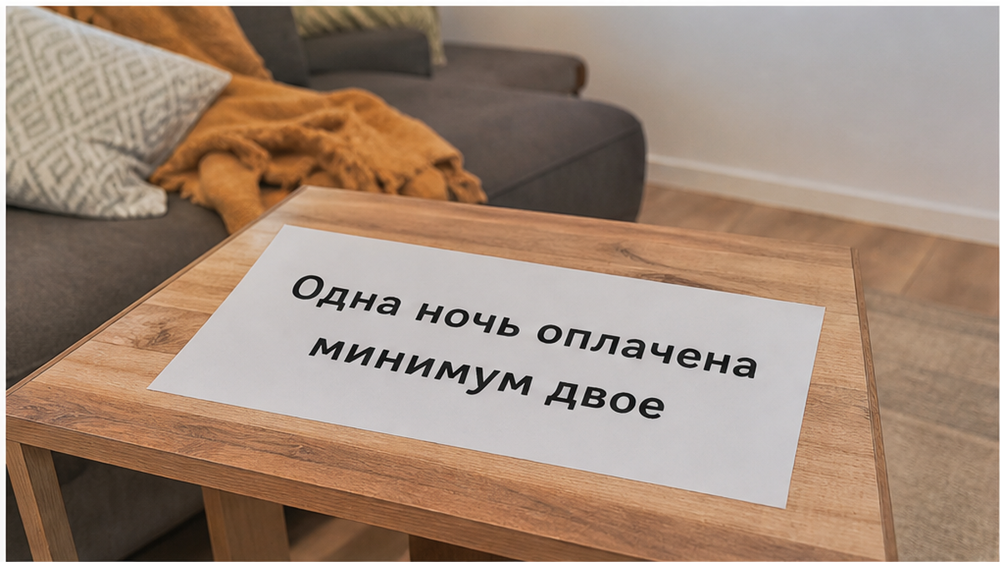
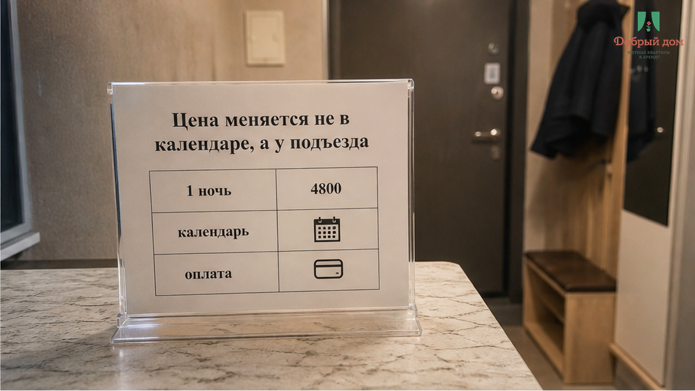
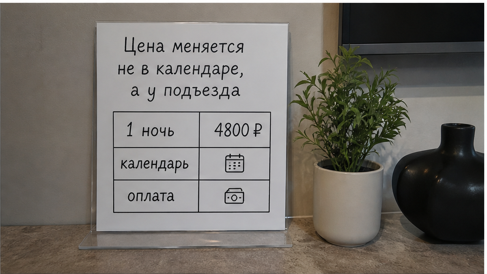
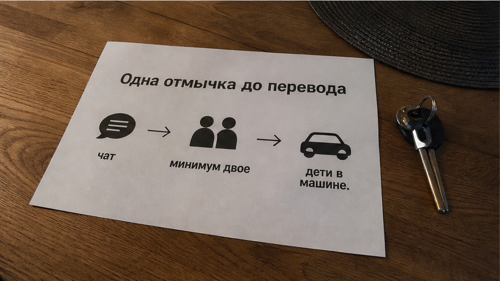
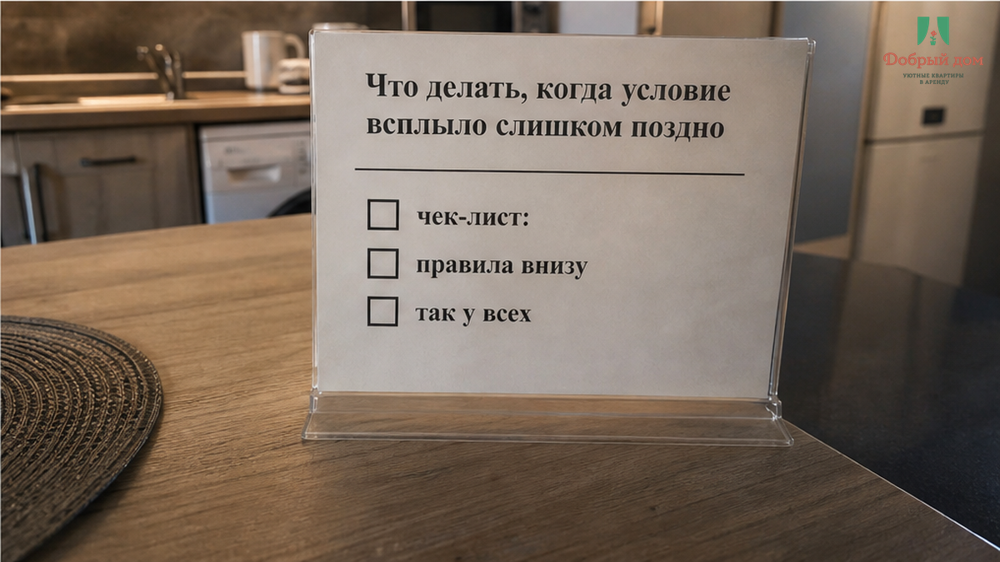
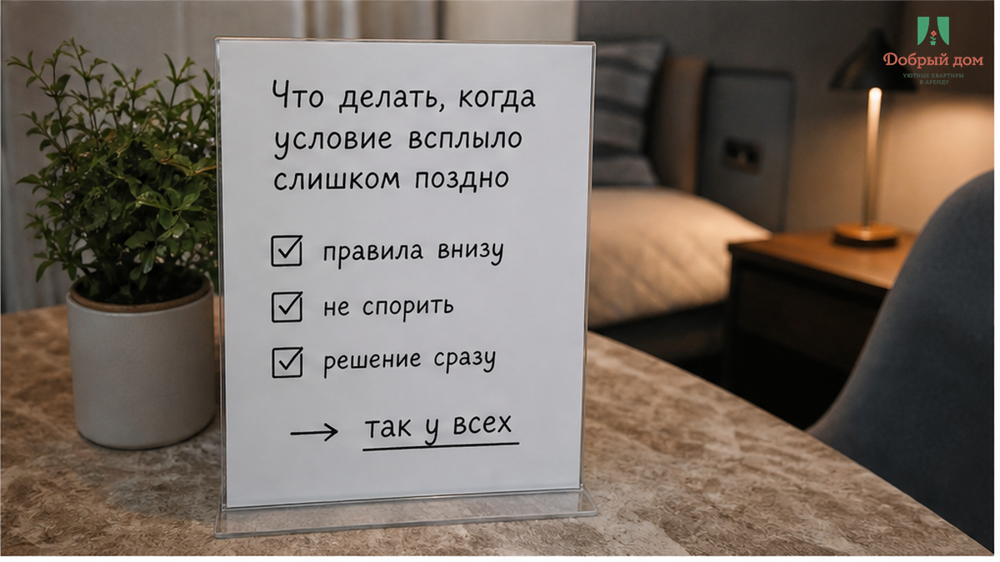
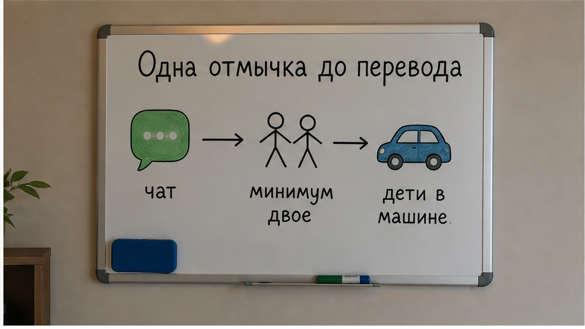

«У нас минимум двое суток, одну ночь не сдаём». Сообщение пришло, когда машина уже стояла у подъезда: багажник забит, дети спят на заднем сиденье, в салоне горит только экран телефона. Было уже десять сорок вечера. За одну ночь уже заплатили 4 800 ₽ — через приложение, по календарю, который спокойно дал выбрать одну дату. Не две. Одну. До этого слово «минимум» не появлялось ни в цене, ни в переписке, ни в подтверждении брони.
Потом звучат знакомые объяснения: «так у всех в выходные», «в объявлении написано внизу». Возможно, строчка и была где-то в карточке. Но гость смотрел цену, свободную дату и кнопку оплаты — именно это платформа показывает крупно. А сломалось здесь не внимание гостя к мелкому тексту. Человек купил одну ночь, а у подъезда ему предложили другой продукт: минимум двое суток, то есть вдвое дороже, ночью, с детьми в машине и без понятного запасного адреса рядом.
Я хост посуточной в Тюмени. Это «Добрый дом».


В этой истории нет сложного конфликта. Гость показывает подтверждение: одна ночь, 4 800 ₽ оплачены. В ответ получает короткое условие: «У нас минимум двое. Доплатите вторую — заселю». Никто не обязан повышать голос. Давление и без этого уже работает: поздний вечер, дорога за спиной, дети в машине, вещи в багажнике. В такой точке человек платит не за вторую ночь. Он платит за возможность не искать новое жильё на ходу.
Минимальный срок сам по себе не проблема. Хост вправе сдавать квартиру от двух суток, особенно если так настроена его работа. Но тогда это правило должно стоять там же, где цена и доступные даты. Если календарь принимает бронь на одну ночь, а минимум всплывает после перевода денег, это не правило бронирования. Это новое условие, которое гостю предъявили тогда, когда отказаться сложнее всего.
Иллюзия здесь простая: будто гость сам виноват, потому что «не дочитал». Но ключевое условие нельзя прятать внизу карточки, а потом делать вид, что оно равнозначно выбранной дате и принятой оплате. Когда площадка продала одну ночь, гость вправе ожидать одну ночь. Не разговор о доплате у дома.
Нет. Так не заселяем. Срок проживания и сумма за каждую ночь должны быть проговорены до кнопки оплаты. Не в момент, когда человек уже приехал, и не в сообщении, которое рушит поездку за несколько минут.


Есть один вопрос, который иногда снимает весь туман заранее: сколько минимум ночей и какая сумма за вторую ночь — это было написано в чате до оплаты? Не «можно ли приехать», не «квартира точно свободна», а именно срок и цифра. На такой вопрос нужен прямой ответ. Если вместо него приходит «приезжайте, разберёмся» или «всё указано в объявлении», риск уже виден.
Потому что в нормальном заселении нет причины скрывать базовое условие. Если минимум двое суток, это легко написать одной фразой. Если одна ночь возможна только по другой цене, её тоже можно назвать заранее. Трудность начинается не с правила, а с попытки оставить правило расплывчатым до момента, когда гость окажется без выбора.
Похожая механика встречается не только со сроком проживания. Где-то после перевода наступает тишина в чате после предоплаты. Где-то человек оплатил ранний заезд, а у двери узнал, что квартира ещё занята уборкой — об этом мы разбирали в истории про оплаченный заезд и ожидание у двери. Бывает и так, что цена в карточке выглядит одной, а на оплате превращается в другую: в карточке 3 400 ₽ за ночь, на оплате — 8 816 ₽ за две не должна становиться сюрпризом.
Во всех этих случаях гость сталкивается не с бытовой мелочью, а с одной и той же поломкой: сначала деньги, потом новые правила. И особенно тяжело, когда это происходит в дороге. Если рейс отменили или планы сорвались уже после перевода, ситуация тоже не должна превращаться в молчание и догадки — мы отдельно писали, что делать, когда сорвался рейс после предоплаты.
Вам уже отказывали в одной ночи после оплаты? Напишите в Telegram https://t.me/Dobriy_dom_72 или в MAX — без публикации вашей переписки.

Если у подъезда выясняется, что оплаченную одну ночь не готовы заселять без второй, не спорьте только на словах. Откройте подтверждение брони, сохраните переписку и зафиксируйте, что именно вам предлагают: доплату, отмену или отказ в заселении. Это нужно не для красивого конфликта, а чтобы поддержка видела разницу между тем, что было оплачено, и тем, что потребовали после приезда.
Писать в поддержку лучше сразу, пока вы на месте и сообщение хоста перед глазами. Формулировка простая: оплачена одна ночь, календарь позволил выбрать одну дату, до оплаты минимальный срок не сообщался, у подъезда требуют оплатить вторую ночь. Не надо доказывать, что вы «очень устали» или что дети действительно спят в машине. Это и так тяжёлая часть истории. Главное — сохранить факты в той последовательности, в которой они произошли.
На будущее помогает короткая привычка: перед оплатой спросить минимальный срок и итоговую сумму, сделать скрин выбранных дат, цены и ответа хоста. Не потому что каждый хост ищет повод для доплаты. А потому что дорога — плохое место для переговоров, а поздний вечер — ещё хуже.
Запасной вариант тоже не выглядит романтично, пока не понадобится. Гостиница с ресепшеном или понятный второй адрес не решают чужую ошибку, но убирают главное давление: необходимость соглашаться на любые условия, лишь бы дети не ждали в машине.


Сначала срок и сумма в чате. Потом оплата. Не наоборот.
Всё, что сказано до перевода, — это условия, на которые гость соглашается. Всё, что появляется после, — уже новая просьба. Её особенно неудобно обсуждать у подъезда, когда путь назад означает снова грузить вещи, будить детей и искать ночлег. Поэтому минимальный срок нельзя держать как рычаг на случай, если человек уже приехал.
Когда ищут квартиру посуточно, обычно сравнивают фото, район, цену и свободные даты. Так ведёт себя обычный человек, а не невнимательный гость. Если самое важное правило спрятано так, что календарь всё равно продаёт другую услугу, проблема не в госте. Проблема в том, как устроено заселение.
Наш вывод простой. Минимальный срок — нормальное правило, если его называют заранее. У подъезда он превращается в цену чужой безвыходности.
Забронировать без сюрпризов: добрыйдом-72.рф/booking/ · сайт · Telegram https://t.me/Dobriy_dom_72 · MAX https://max.ru/id660300569233_biz · менеджер · +7 (993) 574-83-22.